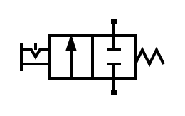
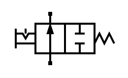

3. Válvulas neumáticas¶
Las válvulas neumáticas son componentes que permiten cortar el paso del aire comprimido o permitir el paso del aire comprimido a voluntad.
A continuación se muestra el símbolo de una válvula 2/2 normalmente cerrada:
{kind=link}

Válvula 2/2 normalmente cerrada, en reposo.¶
- La forma de denominar una válvula es la siguiente:
- Primero, el nombre genérico Válvula
- Segundo, el número de vías o tuberías por donde puede circular el aire. En este caso son 2 vías, una debajo y otra encima del cuerpo de la válvula.
- Tercero, el número de posiciones de la válvula neumática. Son los diferentes recuadros que tiene el símbolo, en este caso tiene 2 posiciones.
Los pilotajes son los métodos que se utilizan para mover la válvula. Las válvulas tienen 2 puntos de pilotaje, para accionarlas y para que pasen a reposo. La válvula anterior se acciona manualmente, con enclavamiento y pasa a reposo con ayuda de un muelle.
Válvula 2/2¶
Esta válvula es equivalente a un grifo de pulsador, como el que tienen las fuentes de agua. Tiene dos posiciones, reposo y accionado.
Cuando la válvula está en reposo, el aire está cortado y no se permite el flujo de aire a través de ella. Esto se indica con dos "T", que representan el paso cerrado.
Cuando la válvula está accionada, el aire puede circular entre las dos vías. Esto se indica mediante una flecha que une la vía inferior con la superior:
{kind=link}

Válvula 2/2 normalmente cerrada, accionada.¶
Nota
Aunque la flecha indica el flujo preferente del aire desde la parte inferior hacia la superior, la válvula es como un grifo abierto y permite también que el flujo de aire circule a la inversa, desde la vía superior a la vía inferior.
En neumática esta válvula no es muy utilizada, porque solo permite el paso de aire en un sentido y no permite el retorno de aire para vaciar los cilindros neumáticos.
De todas formas podemos encontrar ejemplos de uso de las válvulas 2/2 en las máquinas para inflar neumáticos de las gasolineras, en los gatillos de las pistolas de aire para limpieza o en los pulsadores de los aerosoles.
Válvula 2/2 y cilindro¶
Para comprobar los problemas que presenta una válvula 2/2 a la hora de pilotar un cilindro neumático, vamos a simular su comportamiento con el simulador:
Primero vamos a seleccionar en el menú Simular... Iniciar para que
comience la simulación.
- Al accionar la válvula 2/2 de la izquierda, permitimos el paso de aire desde el compresor hacia el cilindro y el vástago del cilindro saldrá hacia delante por completo.
- Al pasar a reposo la válvula 2/2 de la izquierda, el paso de aire desde el compresor se cierra, pero el aire permanece almacenado en el cilindro, que permanece extendido.
- Ahora nos vemos obligados a accionar la válvula 2/2 de la derecha para permitir que el aire del cilindro se escape a la atmósfera y que el cilindro pueda volver a su posición inicial de reposo.
Este esquema es poco flexible porque necesita accionar dos válvulas distintas para conseguir los dos movimientos del cilindro. A pesar de eso, podemos ver ejemplos de su uso en los cilindros que levantan automóviles en los talleres mecánicos.
Un problema que presenta este esquema es que si accionamos las dos válvulas a la vez el aire del compresor se escapará rápidamente a la atmósfera, vaciando en poco tiempo el aire comprimido almacenado en el compresor.
Ejercicios¶
¿Qué es una válvula neumática y de qué partes se compone?
¿Cómo se nombra una válvula neumática?
Dibuja una válvula 2/2 en reposo y otra válvula 2/2 accionada.
Explica con tus palabras el funcionamiento de una válvula 2/2.
¿Por qué la flecha del símbolo neumático está orientada hacia arriba? ¿Está permitido el paso de aire hacia abajo?
Escribe tres ejemplos de uso de las válvulas neumáticas 2/2.
Dibuja en el siguiente simulador el mismo circuito que puede verse en el simulador de más arriba. La simulación debe funcionar igual.
Explica con tus palabras el funcionamiento del circuito anterior.
¿Qué pasará con el cilindro neumático en el circuito anterior si accionamos las dos válvulas a la vez? Simula este caso y explica el funcionamiento del circuito.